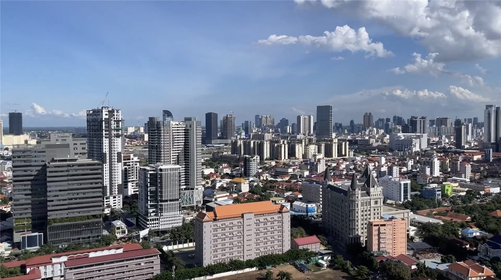

캄보디아, 대만 입국 편의조치 중단… “대만은 중국의 한 성”
캄보디아가 대만 여권 소지자에 대한 입국 편의조치를 중단했다. 캄보디아 측은 “대만을 시종 중국의 한 성으로 본다”고 밝혔다.
조계현 기자 · 2026.07.24
橋국제

캄보디아가 대만에 대한 입국 편의조치를 중단하며 “대만을 중국의 한 성으로 인식한다”는 입장을 밝혔다고 연합보가 전했다. 각국의 입국·비자 정책은 외교적 입장과 실무적 편의가 함께 작용하는 사안이다.
광고 문의 · 300×250이번 조치로 해당 지역을 오가는 대만 여행객과 사업가의 편의에 영향이 예상된다. 국가 간 지위 문제와 실생활의 불편이 얽히는 전형적 사례다.
양안 문제를 둘러싼 각국의 입장은 저마다 다르며, 이는 여행·통상·교류의 실무에도 직접적인 영향을 준다.
華橋時報는 양안 관련 사안에서 어느 한쪽의 입장을 지지하거나 배격하지 않고, 사실과 각국의 공식 입장을 있는 그대로 전한다. 다만 정치적 사안이 개인의 일상과 이동의 자유에 미치는 실질적 영향에는 균형 있게 주목한다.
출처·참고 (사실 확인용 — 본문은 직접 재작성)
· 聯合報
· 聯合報